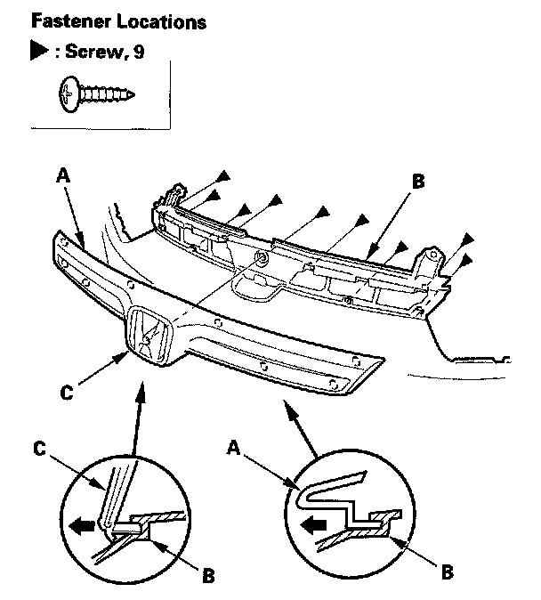
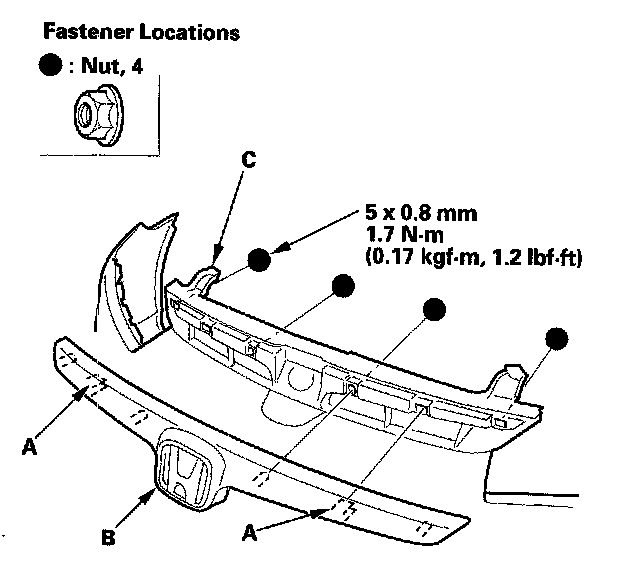
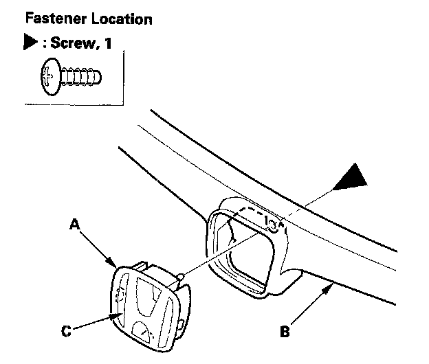
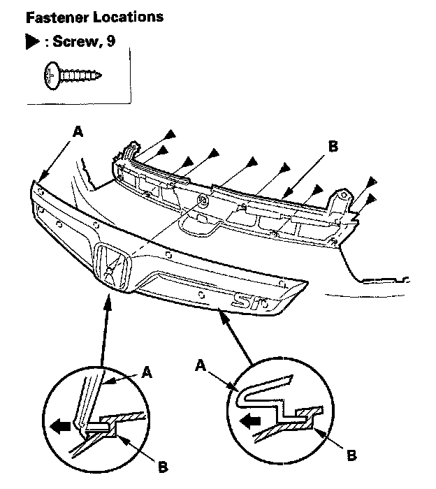
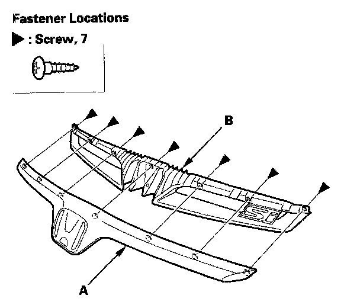

Front Grille Replacement
Front Grille Replacement2-door (Except Si model)
NOTE: Take care not to scratch the bumper and grille.
1. Remove the front bumper.

2. Remove the screws, and remove the front grille (A) from the front bumper (B).
3. If emblem (C) replacement is necessary, refer to emblem/sticker replacement.
4. Install the grille in the reverse order of removal.
4-door (Except Si model)
NOTE: Take care not to scratch the bumper and grille.
1. Remove the front bumper.

2. Remove the nuts, and release the hooks (A), then remove the front grille (8) from the front bumper (C).

3. If necessary, remove the screw, and release the hooks, then remove the front emblem base (A) from the front grille (B).
4. If emblem (C) replacement is necessary, refer to emblem/sticker replacement.
5. Install the grille in the reverse order of removal.
Si model
NOTE: Take care not to scratch the bumper and grille.
1. Remove the front bumper.

2. Remove the screws, and remove the front grille (A) from the front bumper (B).

3. Remove the screws, then separate the front grille molding (A) and the front grille base (B).
4. If emblems replacement is necessary, refer to emblem/sticker replacement.
5. Install the grille in the reverse order of removal.